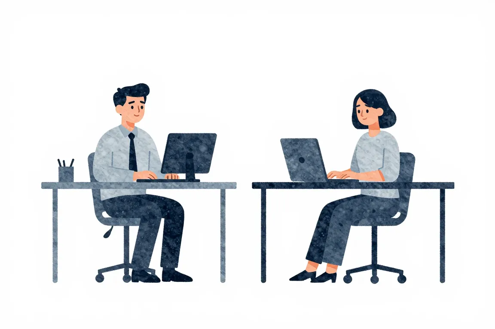

Proč se učit programování#
K čemu se hodí programování? Není jen pro ty, kdo chtějí pracovat v IT. Pomáhá vědcům, úředníkům nebo novinářům — a práci může usnadnit i tobě.

Co je programování #
Programovat znamená umět počítačům říkat, jak za nás mají dělat nudné, opakující se úkony. Začíná to na tom, že mohou počítat čísla z tabulek nebo odesílat e-maily, a končí samořídícimi auty. Jak vypadá programování v praxi?
- Potřebuješ vyřešit nějaký problém, ale dělat to ručně by bylo zdlouhavé.
- Vymyslíš recept krok za krokem, podle kterého by problém mohl vyřešit počítač za tebe.
- Napíšeš recept v nějakém „jazyce“, kterému počítač rozumí.
- Necháš počítač spustit ten recept.
- Zjistíš, že to máš vymyšlené s chybou. Počítač slepě následuje tvůj recept a celé je to špatně.
- Opravuješ recept a spouštíš ho stále dokola, nejde ti to, přemýšlíš, vaříš kafe, točíš se na židli.
- Po třech hodinách spustíš recept a konečně to funguje. Hurá, naprogramováno!
Co programování není?
- Věda — Nemusíš skvěle ovládat ani matematiku, ani fyziku, ani žádný jiný vědní obor.
- Servis — Spravování tiskáren v kanclu nebo nastavování e-mailových schránek.
- Magie — Je to spíš dovednost a zručnost, stejně jako umět vyrobit stůl nebo uvařit dobré jídlo.
Proč se to učit #
Je důležité pochopit, že programování je jen nástroj, stejně jako kladivo nebo vrtačka. Pokud to umíš s vrtačkou, je ti to samo o sobě celkem k ničemu, dokud nenajdeš úkol, k jehož splnění by ti vrtačka pomohla, např. pověšení obrazu na zeď. S programováním je to stejné. Většinou je to tak, že úkoly přichází od lidí z jiných oborů a programátor je nájemným řemeslníkem, který umí věci skvěle řešit pomocí programování.
Stejně jako u vrtání ale není vůbec od věci, pokud se naučí programovat i amatér. Dnes už běžně základní znalost programování pomáhá vědcům, úředníkům nebo novinářům. Základy se totiž dají naučit za několik týdnů, a i když ti nebudou stačit na zaměstnání v IT, k řešení spousty úkolů stačí perfektně.
Každý, kdo ovládá nějaké základy programování, si dokáže ušetřit práci s excelovými tabulkami nebo třeba uspořádáním velkého množství souborů na disku.
Video je součástí série Průvodce nováčka v IT, kterou natočilo ENGETO ve spolupráci s Honzou z junior.guru.
Povědomí o programování jako výhoda #
I když nakonec nebudeš vůbec programovat, hodí se rozumět tomu, jak tato práce funguje. Každá firma má dnes IT oddělení a to se mnohem raději baví s lidmi, kteří chápou jak vznikají programy. Můžeš se snadno uplatnit jako prostředník mezi nimi a ostatními. Otevře se ti cesta do dalších oborů, které s počítači souvisí — např. internetový marketing nebo psaní technických textů, které rovněž umožňují vydělat si dobré peníze a mít pružnou pracovní dobu. Občas se straší v novinách, že přicházejí miliony zlých robotů, kteří jednou všem vezmou práci. Místo robotů to asi budou spíš mobilní appky, ale jedno je jisté — technologie budou prostupovat naše životy stále více a bude tím pádem potřeba stále více těch, kteří technologiím rozumí.
Při programování se také trénuješ v informatickém myšlení, což je zcela obecná dovednost nesouvisející nutně přímo s počítačem. Informatické myšlení zlepšuje tvou schopnost řešit složité problémy, a to i v každodenních situacích. To je také důvod, proč se dnes toto myšlení začíná učit i na základních školách.
Programování jako pomocník #
Programování není cíl, ale nástroj — jako šroubovák nebo matematika. Dokáže automatizovat nudnou, opakující se práci. Bude se ti proto hodit, ať už děláš v kanceláři nebo koukáš do mikroskopu a počítáš bakteriím nožičky.
Celá farma jede přes počítač. Chladicí boxy i výtopný systém ve fóliovnících jsou naprogramovány na přesnou teplotu, online jede i objednávkový systém, tedy prodej květin.
Doktoři a vědci přicházejí na to, že když výpočty naprogramují, mohou svůj výzkum provést mnohem rychleji. Novináři, kteří umí zpracovávat velká množství dat, díky tomu přinášejí zajímavé analýzy. Kromě toho, během covidu-19 se dostaly složité grafy a datová žurnalistika do každé větší redakce. Prakticky každý, kdo má základy programování, si zase dokáže ušetřit práci s excelovskými tabulkami nebo s uspořádáním velkého množství souborů na disku. Místo toho, aby se někde muselo 500× udělat Ctrl+C a Ctrl+V, můžeš si to naprogramovat.
Vývojáři-amatéři ve firmách se stále častěji uchylují k vlastnoruční tvorbě nástrojů, které potřebují k práci. Počet takových lidí stoupá geometrickou řadou.
Pokud chceš mít programování jako pomocníka, tento web ti na dalších stránkách ukáže, kde se můžeš naučit základy nebo jak si lze programování procvičovat a dále prohlubovat znalosti.

Programování jako kariéra #
Průměrná mzda programátorů je 50.000 Kč a těch zkušených je dlouhodobě nedostatek. Vysokoškolský diplom po tobě většinou nikdo nevyžaduje, můžeš mít pružnou pracovní dobu, můžeš pracovat na dálku. Jestli v roce 2026 existuje výtah k lepší životní úrovni, je to IT. Zkušenějším programátorům navíc nehrozí, že by měli problém sehnat si práci:
-
V roce 2018 rostlo IT v Evropě 5× rychleji než vše ostatní. Takto rozjetý vlak se nezastaví, zvlášť když není zasažen přímo a podílí se dokonce na řešení krize.
-
Před krizí měly dvě třetiny IT firem v Česku nedostatek lidí a poptávka stále rostla. I pokud část firem zmizí a bude na trhu více lidí hledajících práci, programátorů bude pořád nedostatek.
-
Oproti jiným oborům je u IT minimální pokles poptávky, někde je dokonce i nárůst — viz např. data od profesia.sk, největšího slovenského portálu s nabídkami práce.
IT samozřejmě neexistuje ve vzduchoprázdnu a ostatní obory potřebuje. Vyrábí nástroje a tyto nástroje musí mít kdo používat. Pro programátory samotné to ale není takový problém. Když přestane fungovat prodej letenek, mohou jít programovat třeba pro banky.
Na rozdíl od řady dalších profesí je pro IT odborníky specifické především to, že jsou rozptýleni napříč hospodářskými odvětvími.
Snad není žádný jiný profesionální obor vyučovaný na vysokých školách, který je pro samouky stejně přístupný jako IT. Všechno ohledně programování si můžeš nastudovat na internetu a vždy se najde někdo, kdo ti rád poradí. Do chirurgie nebo architektury se takto dostat nelze, i když budeš sebevětší nadšenec. Získat první práci v IT oproti tomu samostudiem jde. Není to jednoduché, ale jde to.
Je ovšem důležité počítat s tím, že příprava ti může zabrat i dva roky učení a praktických cvičení, a že bude chvíli trvat, než dosáhneš na nadstandardní výdělky. Rekvalifikace na programování je velký krok, který vyžaduje hodně času, úsilí a odhodlání. Nováčci často projdou úvodními kurzy a pak zjistí, že sehnat první práci vůbec není tak snadné. Místo dobrých rad se jim dostane nejrůznějších mýtů, takže se na vypsané nabídky hlásí nepřipravení a s nerealistickými očekáváními.
Nauč se programovat, firmy v IT berou z nedostatku lidí každého, kdo má jen zájem. Do začátku si řekni aspoň o sto tisíc.
Pokud se chceš programováním živit, tento web ti na dalších stránkách ukáže, kde se můžeš naučit základy, jak získat potřebnou praxi nebo jak si hledat svou první práci. Kromě toho je tady i stránka s nabídkami práce.
Programování CNC strojů #
CNC jsou programovatelné průmyslové stroje, které umí frézovat, vrtat, soustružit, řezat, apod. Lidem, kteří těmto strojům umí zadávat úkoly a tvořit na nich výrobky, se říká CNC programátoři. Pracují jak se samotným strojem, tak i s počítačem, tím ale podobnost s klasickým programováním končí. Pro lepší představu o této profesi může sloužit reportáž Jihočeské televize.

Obor mechanik seřizovač-programátor byl hlavně o mechanik, pak lehce o seřizovač a takřka vůbec o programátor. A když, tak programovat CNC, což není rozhodně totéž jako programovat dejme tomu aplikace pro web.
Tento web se zabývá vytvářením softwaru, tedy programů pro počítače nebo mobily. Pokud toužíš programovat CNC, budeš muset hledat informace jinde.
Máš otázky? Chceš probrat svou situaci?
Na junior.guru Discordu si pomáhá 244 lidí, které zajímá svět IT juniorů. Začátečníci, kteří hledají komunitu a podporu. Senioři s chutí sdílet své zkušenosti. K tomu pravidelné online akce a mnoho dalšího.